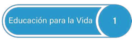
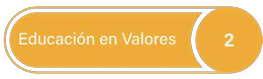
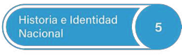
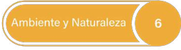
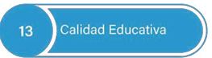
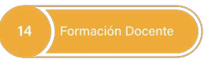

Selecciona un eje para conocer su resumen:

Eje 1: Educación para la Vida

Eje 2: Educación en Valores
Eje 3: Educación Creativa
Eje 4: Educación Artística y Cultural

Eje 5: Historia e Identidad Nacional

Eje 6: Ambiente y Naturaleza
Eje 7: Cambio Climático
Eje 8: Educación Física y Deportiva

Eje 9: Educación Especial Incluyente
Eje 10: Ciencias
Eje 11: Investigación e Innovación
Eje 12: Cobertura Amplia con Inclusión y Equidad

Eje 13: Calidad Educativa

Eje 14: Formación Docente
Eje 15: Fortalecimiento Institucional
Eje 16: Infraestructura y Equipamiento